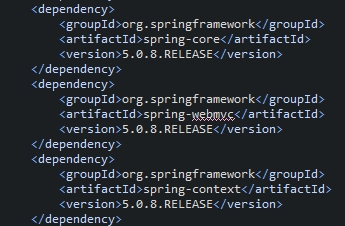
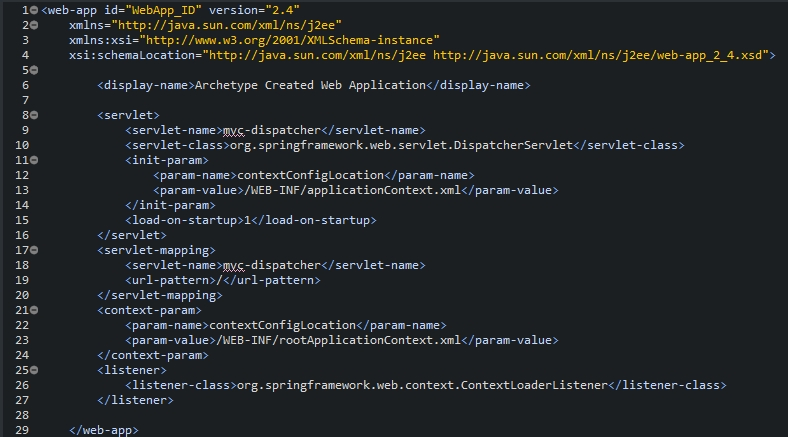
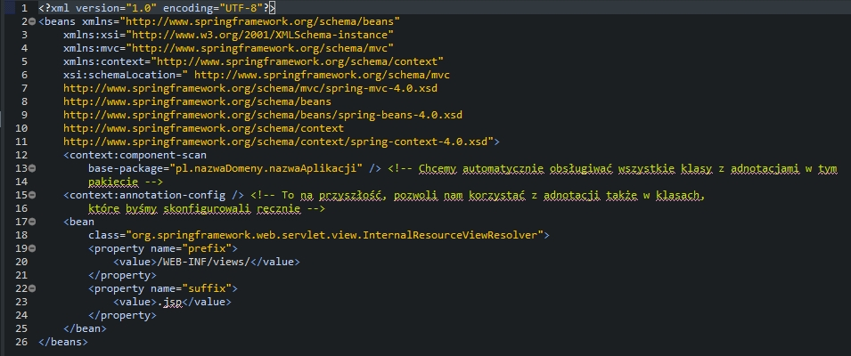
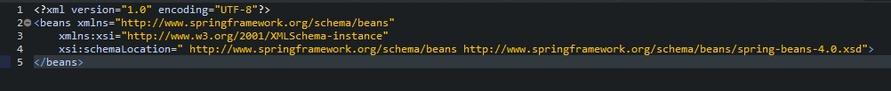
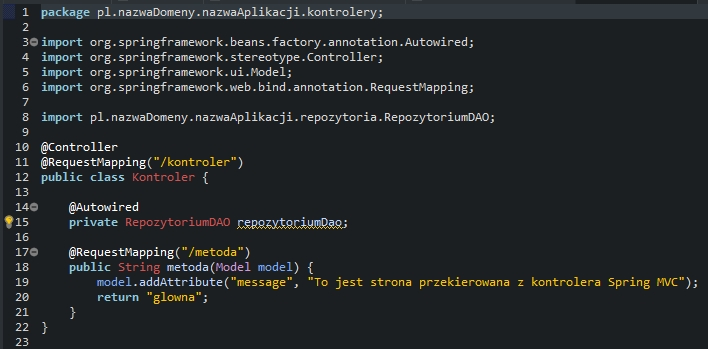
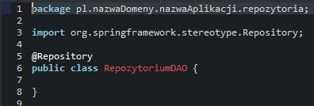
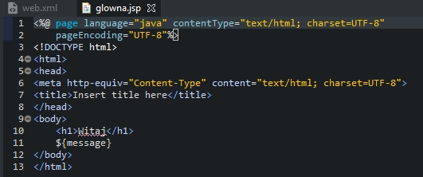
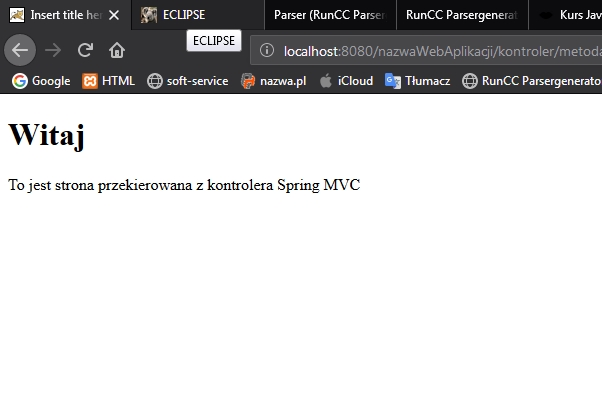

Do wcześniej utworzonego projektu maven dla Javy EE dodamy framework Spring MVC. Aby to zrobić trzeba na początek dodać odpowiednie zależności do pliku pom.xml. Zatem dodajemy:
Kolejną rzeczą, którą trzeba zmienić to konfiguracja w pliku web.xml:
Należy również dodać plik konfiguracyjny applicationContext.xml Springa do katalogu webapp/WEB-INF
Kolejny plik konfiguracyjny to plik rootApplicationContext.xml. Na razie pusty a w przyszłości może zostać on wykorzystany do skonfigurowania całej aplikacji:
Następną rzeczą jaką należy dodać to klasa kontrolera, który będzie obsługiwał żądania HTTP:
Następną klasą jaką dodajemy jest klasa Repozytorium:
Ostatnią rzeczą jaką należy dodać to strona jsp, czyli widok do, którego zostaniemy przekierowani z kontrolera:
Tak przygotowany projekt można już skompilować poleceniem mvn clean package i uruchomić na serwerze. Aby zobaczyć efekt w przeglądarce internetowej należy przejść pod adres: nazwaWebAplikacji/kontroler/metoda
